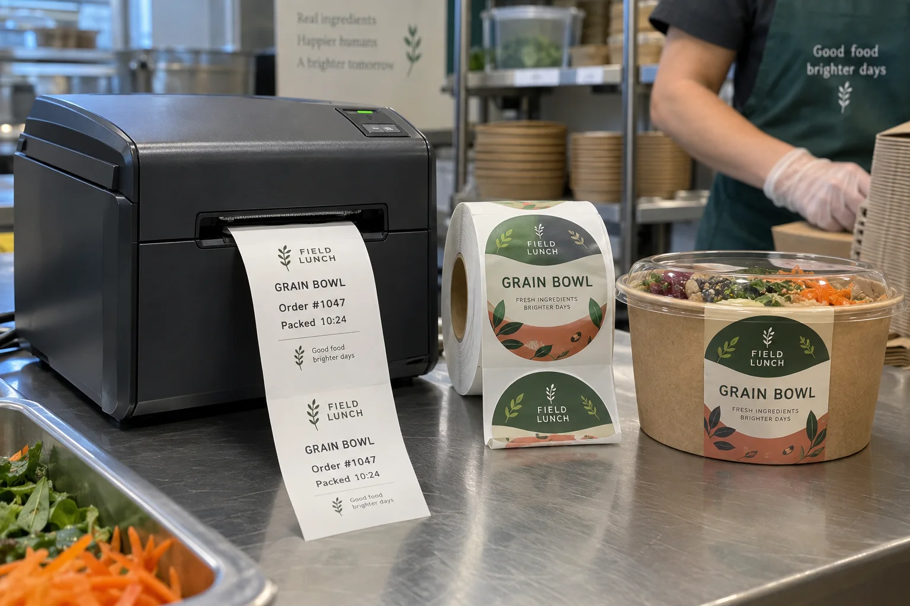

Start with the information that changes every order
At a takeaway counter, the item name, time and order number change constantly. A central kitchen may also need a colorful fixed brand label on the bowl. Buyers sometimes try to make one roll solve both jobs. I would first draw the workflow: what is printed at packing, what is printed in advance and where each label lands.
Avery Dennison's printer compatibility announcement describes a particular linerless direct-thermal material validated with a particular printer. That specificity matters. Linerless is a system choice, not a promise that any existing thermal printer can accept a roll with no backing.
One rush-hour counter and one branded meal kit
Consider a composite quick-service kitchen marking hundreds of takeaway bowls with a short variable order label. Staff want fewer liner scraps at the station and fewer roll changes. A compatible linerless printer may be worth testing. The same kitchen's retail meal kit needs illustrated full-color branding, stable product copy and a carefully controlled front panel. A preprinted die-cut pressure-sensitive label remains a different, sensible choice.
I would not persuade the meal-kit buyer to accept a monochrome thermal sticker purely to reduce backing waste. Equally, I would not force the counter team to preprint thousands of order-number variants. Each format wins when assigned the right job.
Compare the whole station, not just the roll
| Question | Linerless direct thermal | Preprinted die-cut |
|---|---|---|
| Variable information | Printed at use on compatible equipment | Can use an overprint area if construction allows |
| Full-color branding | Usually not the main strength of a basic thermal station | Can be planned into a complete printed design |
| Backing waste | No separate release liner in the intended system | Release liner requires collection or disposal plan |
| Equipment check | Printer, cutter and media compatibility are essential | Core, gap, sensor and applicator setup are essential |
Avery Dennison's linerless overview describes operational benefits for its own blank direct-thermal system. Treat its roll-yield figures as product-specific, not a guaranteed saving for your kitchen. Obtain a station trial and compare actual roll changes, rejected labels and handling time.
What a fair trial looks like
Use the actual food container, printer, order data and shift workflow. Confirm label length variation, tear or cut behavior, print readability, adhesion on the package and how operators handle mistakes. If the bowl is warm, oily or chilled, validate those application conditions on the proposed construction. A sample printed on a desk is not an acceptance test for a busy packing line.
For preprinted labels, confirm whether later date or order coding is needed. Inks, overprint area and printer technology must be compatible. If both a variable-data and brand label are used, place them so neither covers ingredients, allergens, a barcode or any required package information.
Our buying view
The best format may mean selling fewer printed labels
As a custom-label supplier, it would be easy to recommend a fully printed label for every bowl. I would not do that if a counter needs unique order data at speed. I would separate the jobs: use the compatible variable label where it saves handling, and spend print budget on the brand label where color and shelf recognition earn it. If the equipment is not compatible, the supposed linerless saving disappears before the first meal is packed.
Buying checklist
- List fixed artwork and changing data separately.
- Identify every printer and applicator by exact model.
- Test the actual container at packing temperature.
- Compare full station cost, not only roll price.
- Review waste handling and required copy placement.
For another format decision, compare roll and sheet labels. For a conventional print-on-demand workflow, read direct thermal versus thermal transfer.
Frequently asked questions
Is a linerless label just a normal label without its backing?
No. The material and printer or applicator must be designed as a compatible linerless system. Do not remove the backing from ordinary die-cut rolls.
Do linerless labels replace every printed food label?
No. Direct-thermal order or date labels and full-color brand labels have different artwork, durability and workflow requirements. Some packs need both.
Does linerless always reduce total cost?
Not automatically. Consider compatible hardware, consumables, downtime, waste handling and the design requirement across the actual order volume.
Related buyer guides
Review your label specification
Send package photos, label dimensions, material details, quantity and application conditions. Include good and failed samples where possible so the discussion starts with evidence.